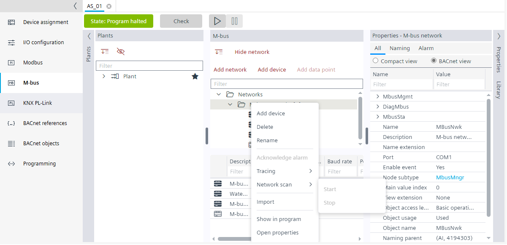
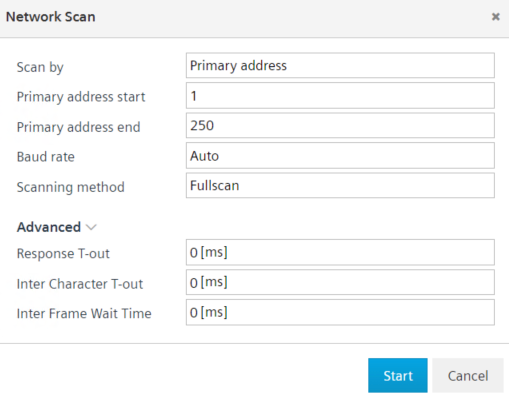
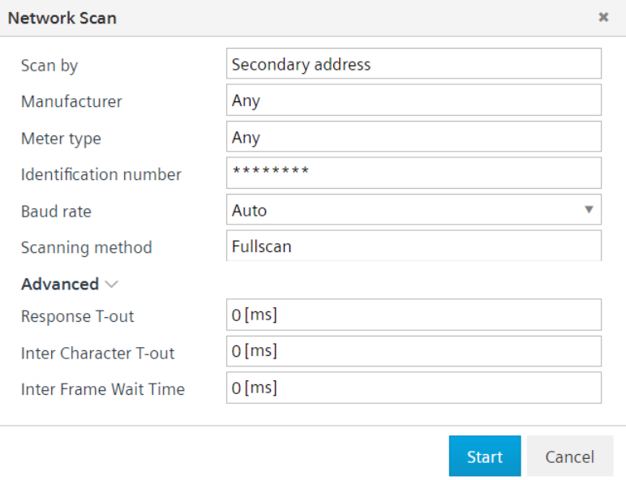

M-bus网络扫描
执行网络扫描以发现 M-bus 网络中未分配的设备。
- An online connection has been established and the devices can be reached.
- Go to Engineering.
- Open the M-bus task and go online.
- Right-click the M-bus network and click Network scan > Start.

- A Network scan dialog box displays.

- In the Scan by field, select either Primary address or Secondary address.
- Primary address (recommended)
Select the Primary address in the Scan by field, adjust the primary start and end address as well as the baud rate to narrow the scanning results.
Do the following: - Enter the start and end address values in the Primary address start and Primary address end field respectively.
- Select the baud rate in the Baud rate field.
Note: New M-bus devices are often delivered with the (invalid) primary address 0 (zero). Please change these addresses to a valid address (1-250) after discovery.
Note: To discover devices with primary address as 0, select Secondary address in Scan by field. - Secondary address (optional)
Select the Secondary address in the Scan by field, you can narrow the scanning results by: - Choosing a manufacturer, the meter type or the baud rate of the target devices. Select the manufacturer and meter type in the Manufacturer and Meter type field respectively.
- Entering the identification number (printed meter number or fabrication number) of the device. Enter the identification number in the Identification number field.

- In the scanning method, select Fullscan to scan all the devices and, select Additive to check for new devices only.
Note: Fullscan clears the discovered devices list and starts the scan from scratch. Additive does not clear the list of discovered devices. - In the Advanced option, select the response time out in the Response T-out field, inter character time out in the Inter character T-out field, and inter frame wait time in the Inter frame wait time field.
- Click Start.
- The M-bus network scan is performed and a
Command successfulmessage displays in the Log view. The discovered M-bus device displays in a Discovered devices folder in the M-bus area, below which is the list of orphan devices. The Address, Device type, Serial Nr, Version, and, the Make (producer) of the device.

设备发现可能需要很长时间，具体取决于扫描选项。可以通过网络上下文菜单停止它。